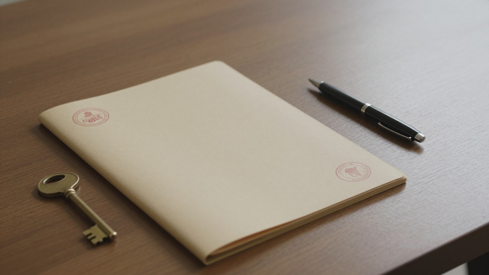
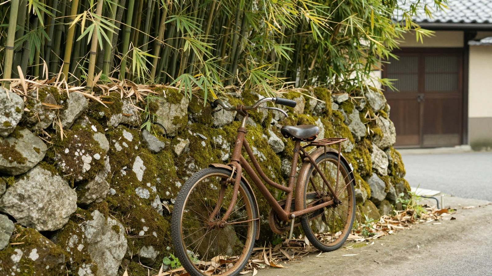

相続登記の義務化
2024年4月1日から、相続登記の申請が義務化されました。これにより、相続で不動産を取得したことを知った日から3年以内に、相続登記をする必要があります。もし正当な理由なくこの手続きを怠ると、10万円以下の過料の対象になります。

遠方に実家があり、空き家のままにしている場合、この期限を過ぎると罰則の対象となるため、注意が必要です。相続登記は、不動産の所有者を誰から誰へ引き継ぐかを公的に記録する手続きです。これを済ませることで、その不動産が自分のものであることが明確になります。
空き家を売却する際にも、まずこの登記が完了していることが前提となります。登記が済んでいないと、売りたいと思ったときに手続きが複雑になったり、時間がかかったりする可能性があります。また、相続人が複数いる場合、全員で合意して手続きを進める必要があります。
相続登記の義務化は、空き家の放置による問題を防ぐための仕組みです。遠方に住んでいても、期限を守って手続きを進めることが重要です。もし手続きが難しい場合は、司法書士などの専門家に相談することも検討してください。
空き家を売ったときの税金の特例
相続した空き家を売却する際には、譲渡所得税が発生する場合があります。この税金を軽減するための制度として、3,000万円特別控除（被相続人の居住用財産の譲渡所得の特別控除）が挙げられます。この制度は、2027年12月31日までに譲渡が行われた場合に適用されます。
ただし、この控除には建物の建築時期などの要件があり、すべての空き家が対象になるわけではありません。適用できるかどうかは税務署や税理士に確認が必要です。
また、相続人が3人以上の場合、2024年1月1日以後の譲渡では、控除額が1人あたり2,000万円になります。これは、相続人が複数いる場合に、それぞれの控除額が調整されることを意味します。
これらの特例を活用することで、譲渡所得税の負担を軽減できる可能性があります。しかし、特例の適用には条件があるため、事前に専門家に相談することが重要です。また、相続登記の義務化に伴い、相続登記を怠ると10万円以下の過料の対象になるため、売却前に相続登記を完了しておくことも必要です。
空き家を売却する際には、税金の特例だけでなく、相続登記の義務化や手放す方法の選択肢も考慮に入れる必要があります。特に、相続土地国庫帰属制度のように、要件を満たす土地は負担金を納めて国に引き取ってもらうことも可能です。
売却を検討する際は、まず相続登記を完了し、次に税金の特例が適用できるかを確認しましょう。その後、業者に相談・査定を申し込むことで、具体的な売却計画を立てることができます。ただし、業者に相談すると、連絡先が業者に渡り、電話やメールで連絡が来ることがあるため、その点も考慮に入れておく必要があります。
これらの情報を踏まえ、相続した空き家を適切に売却し、税金の負担を軽減するための準備を進めましょう。
手放す方法の選択肢
空き家を所有し続けることには、固定資産税や維持管理の費用がかかるほか、建物が老朽化して近隣に迷惑をかけるリスクもあります。手放す方法としては、まず不動産を売却して現金化する方法が一般的です。ただし、相続したばかりの物件は、相続登記が完了していない場合があり、この手続きを済ませる必要があります。

売却が難しい場合や、維持管理の負担を避けたい場合には、「相続土地国庫帰属制度」を利用する方法もあります。この制度は2023年4月27日に始まり、一定の要件を満たす土地であれば、所定の負担金を納めることで国に引き取ってもらうことができます。ただし、すべての土地が対象となるわけではなく、具体的な要件は複雑なため、適用可能かどうかは専門機関に確認することが重要です。
また、空き家を売った場合の税金に関する特例として、「3,000万円特別控除」があります。これは被相続人の居住用財産を譲渡した場合に適用される制度で、2027年12月31日までの譲渡が対象です。2024年1月1日以後の譲渡において、相続人が3人以上の場合は、控除額が1人あたり2,000万円になります。ただし、建物の建築時期などの要件があり、実際に適用できるかは税務署や税理士に確認が必要です。
これらの選択肢を検討する際は、単に手放すだけでなく、税金の負担や手続きの煩雑さを考慮することが大切です。特に相続登記の義務化により、2024年4月1日以降は相続で不動産を取得したことを知った日から3年以内に登記を済ませる必要があります。正当な理由なく怠ると10万円以下の過料の対象になるため、早めに状況を整理し、最適な方法を選ぶことが求められます。
売却相談の進め方
相続した空き家を売却するためには、まず不動産会社に相談し、物件の価値を判断してもらうことが一般的です。この段階で、物件の所在地や築年数、建物の状態などを伝え、査定を依頼します。査定とは、物件を売った場合にいくらになるかを見積もることを指します。
相談や査定の申し込みに際しては、連絡先を業者に伝える必要があります。その場合、電話やメールで連絡が来る可能性があります。遠方の実家を手放す場合、現地への移動が難しいため、こうした連絡手段を活用して進めることになります。
また、相続登記の義務化により、相続で不動産を取得したことを知った日から3年以内に相続登記をする必要があります。正当な理由なくこれを怠ると、10万円以下の過料の対象になります。売却を検討する際は、この登記手続きが整っているかを確認することが重要です。
さらに、空き家を売った場合の税金の特例として、3,000万円特別控除があります。これは2027年12月31日までの譲渡が対象です。2024年1月1日以後の譲渡で、相続人が3人以上の場合は、控除額が1人あたり2,000万円になります。ただし、特例には建物の建築時期などの要件があり、適用できるかは税務署や税理士に確認が必要です。
これらの情報を踏まえ、複数の業者に相談し、条件や費用を比較検討することで、納得のいく売却先を選ぶことができます。
本記事は一般的な制度の説明です。個別の事情は司法書士・弁護士・税理士などの専門家にご確認ください。最終確認日: 2026年10月29日